library("patchwork")
library("tidyverse")Guitar Chord Diagrams
A few days ago, data scientist Tanya Shapiro posted a neat image of guitar chords—that is, the diagrams were made using ggplot (I presume). Today, I am going to try to imitate that idea.
The music source is this simplified guitar tab from Ultimate Guitar (i.e. this tab does not claim to be a perfect rendition).
Frets
I think I will start with the frets. (Disclaimer: I am very much just a beginner with playing guitar, and my descriptions may also be elementary.) I need to represent about 5 rows of space along with 6 columns of strings.
df <- data.frame(x = 1:6, y = 0:5) #generic data
df |>
ggplot(aes(x = x, y = y))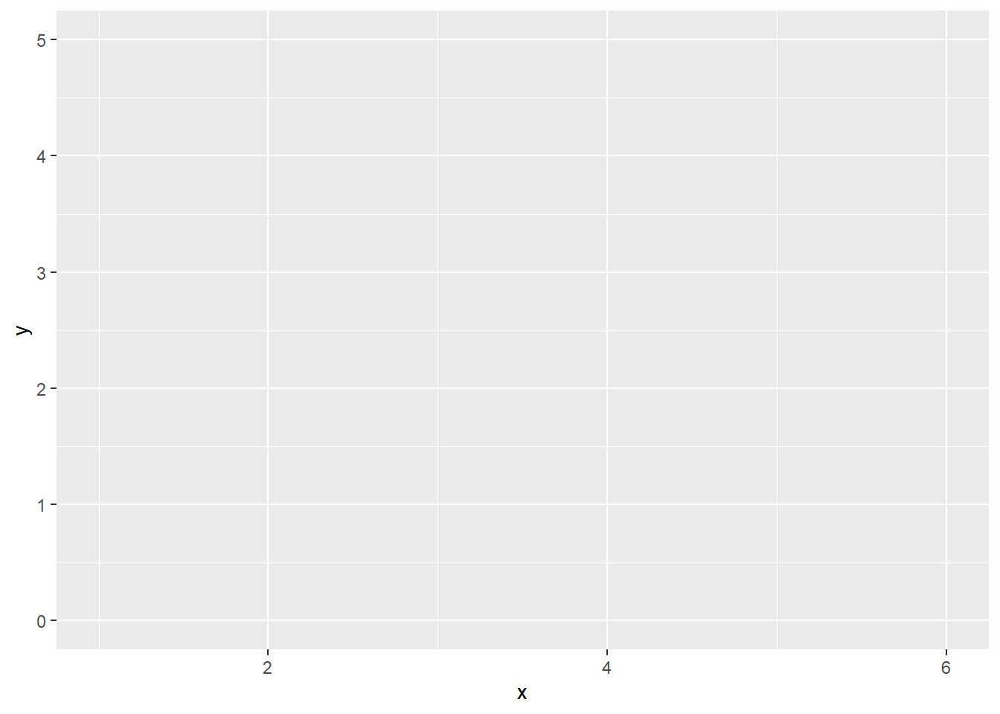
Guitar chord diagrams are not necessarily scaled with equally spaced units in the horizontal and vertical directions, but that might make things easier for me in this recreational side project. Also, I will apply theme_linedraw temporarily to show what I am thinking.
df |>
ggplot(aes(x = x, y = y)) +
coord_equal() +
theme_linedraw()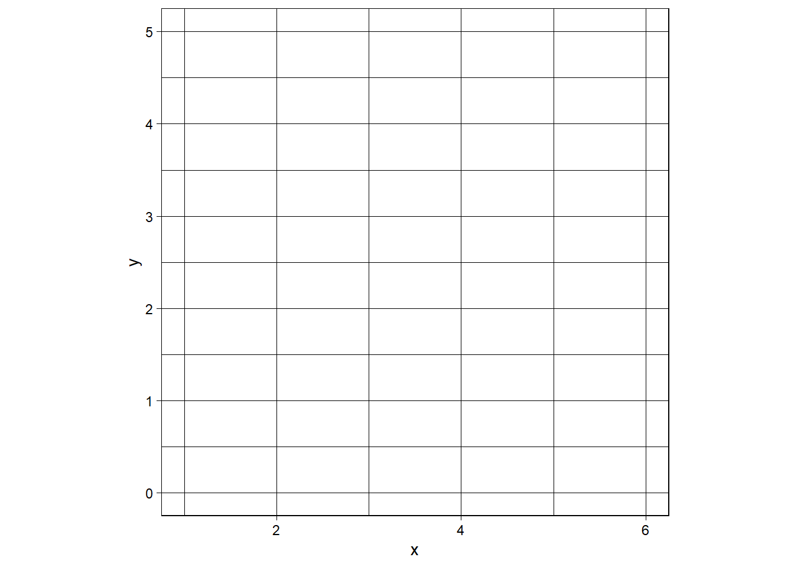
The \(y\) axis has the math-class default, but guitar notation goes in the other direction.
# https://stackoverflow.com/questions/70193132/how-to-reverse-y-axis-values-ggplot2-r
df |>
ggplot(aes(x = x, y = y)) +
coord_equal() +
scale_y_reverse() +
theme_linedraw()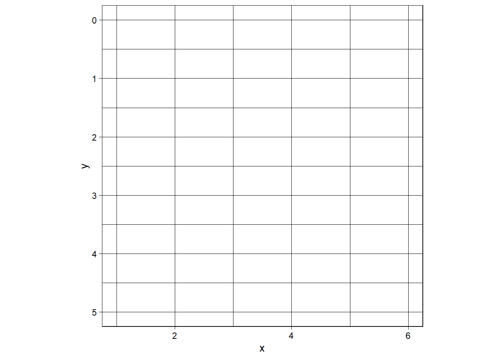
When I remove theme_linedraw (analogy: removing the training wheels from a bicycle), I will need to (at least)
- turn off the background color
- turn off the grid line colors
- turn off the border lines too
df |>
ggplot(aes(x = x, y = y)) +
coord_equal() +
scale_y_reverse() +
theme(
panel.background = element_blank()
)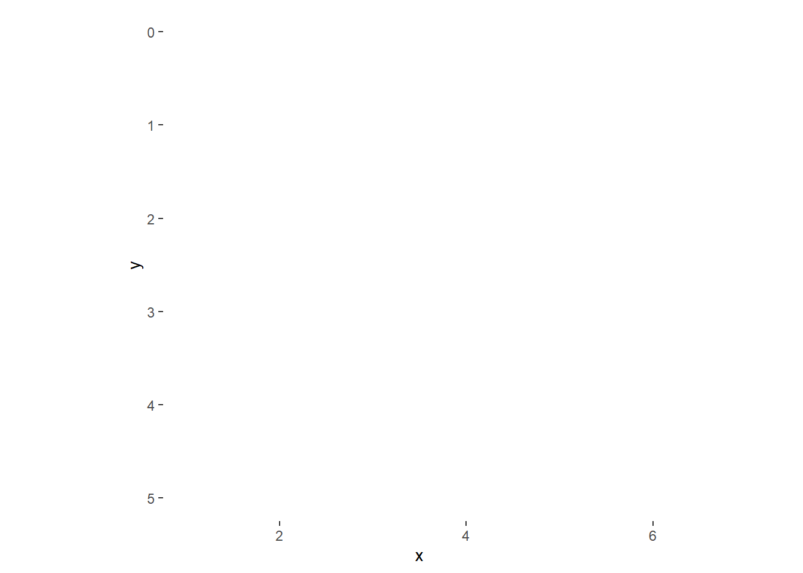
Actually, let’s go ahead and give the background a “wood” color.
# https://redketchup.io/color-picker
df |>
ggplot(aes(x = x, y = y)) +
coord_equal() +
scale_y_reverse() +
theme(
panel.background = element_rect(fill = "#2D2C32"),
panel.grid.minor = element_blank()
)Let’s see if we can cutoff the plot at the top (“nut”) and right side of the plot.
df |>
ggplot(aes(x = x, y = y)) +
coord_equal() +
scale_y_reverse() +
theme(
panel.background = element_rect(fill = "#2D2C32"),
panel.grid.minor = element_blank()
) +
xlim(c(1,6)) +
ylim(c(0,5))Scale for 'y' is already present. Adding another scale for 'y', which will
replace the existing scale.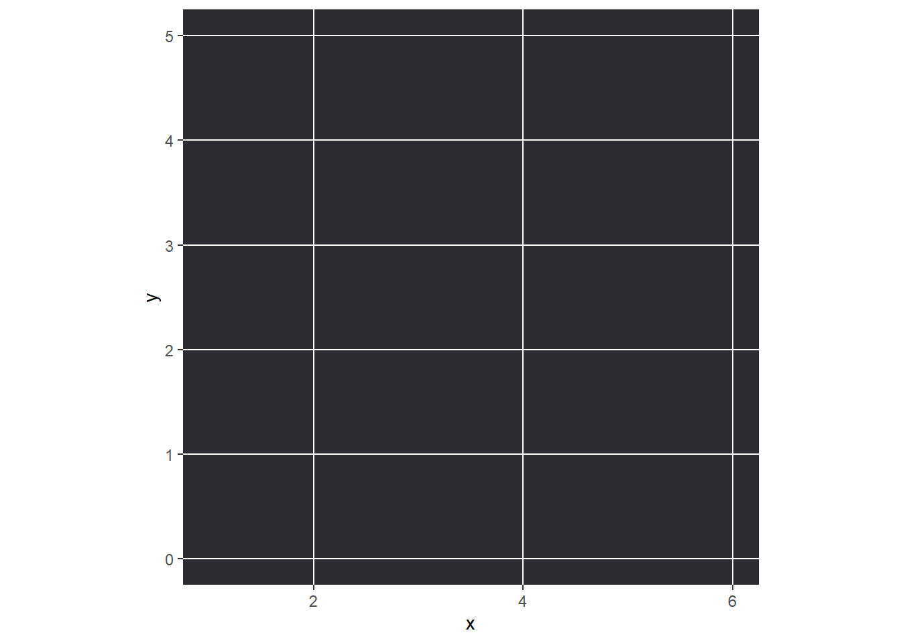
That did not work (and produced a warning because I affected the \(y\) axis twice), so perhaps a better strategy is to make a colorful rectangle manually.
df |>
ggplot(aes(x = x, y = y)) +
coord_equal() +
geom_rect(aes(xmin = 1, xmax = 6, ymin = 0, ymax = 5),
fill = "#2D2C32") +
scale_y_reverse() +
theme(
panel.background = element_blank(),
panel.grid.minor = element_blank()
)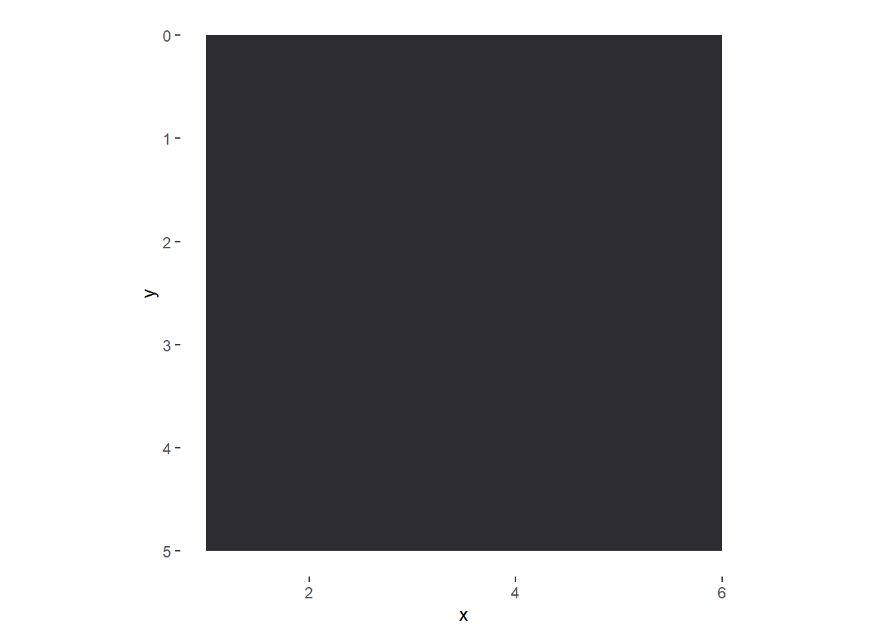
This whole time, I have been thinking about making line segments of certain colors for the frets, strings, and the nut. (Note: silver is not a base color in R??)
df_frets <- data.frame(x1 = 1, x2 = 6, y = 1:5)
df_strings <- data.frame(x = 1:6, y1 = 0, y2 = 5)
df |>
ggplot(aes(x = x, y = y)) +
coord_equal() +
geom_rect(aes(xmin = 1, xmax = 6, ymin = 0, ymax = 5),
fill = "#2D2C32") +
geom_segment(aes(x = x1, y = y, xend = x2, yend = y),
color = "gray50", data = df_frets) +
geom_segment(aes(x = 1, y = 0, xend = 6, yend = 0),
color = "tan", size = 3) +
geom_segment(aes(x = x, y = y1, xend = x, yend = y2),
color = "#C0C0C0", data = df_strings, size = 2) +
scale_y_reverse() +
theme(
panel.background = element_blank(),
panel.grid.minor = element_blank()
)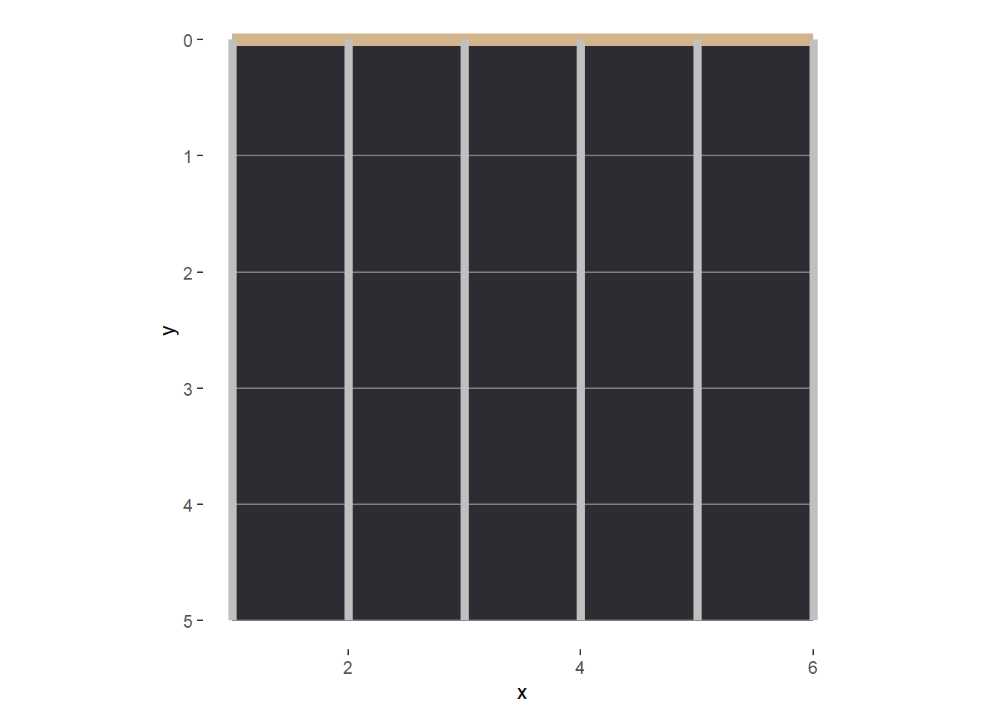
This looks great in my opinion. Let’s turn off the axis tick marks and labels, and save this as a base plot.
fret_background <- df |>
ggplot(aes(x = x, y = y)) +
coord_equal() +
geom_rect(aes(xmin = 1, xmax = 6, ymin = 0, ymax = 5),
fill = "#2D2C32") +
geom_segment(aes(x = x1, y = y, xend = x2, yend = y),
color = "gray50", data = df_frets) +
geom_segment(aes(x = 1, y = 0, xend = 6, yend = 0),
color = "tan", size = 3) +
geom_segment(aes(x = x, y = y1, xend = x, yend = y2),
color = "#C0C0C0", data = df_strings, size = 2) +
scale_y_reverse() +
theme(
axis.title = element_blank(),
axis.ticks = element_blank(),
axis.text = element_blank(),
panel.background = element_blank(),
panel.grid.minor = element_blank()
)
# print
fret_background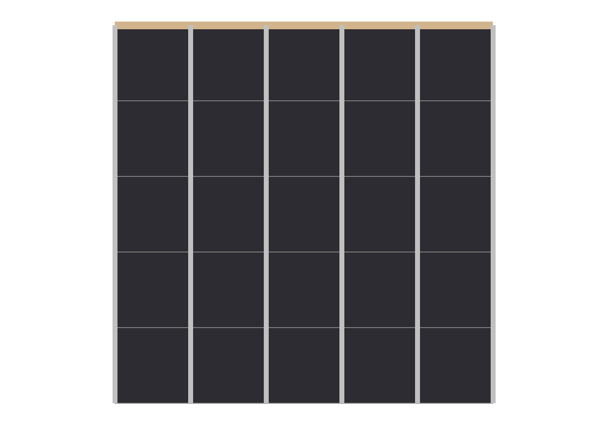
First Chord (Em)
At first, I was thinking of using geom_label to indicate the finger positions, but I bet that using geom_point and then geom_text has more customization options.
df_em <- data.frame(x = c(2,3), y = c(2,2) - 0.5, label = c("1", "2"))
fret_background +
geom_point(aes(x = x, y = y),
color = "blue4", data = df_em, size = 15) +
geom_text(aes(x = x, y = y, label = label),
color = "tan", data = df_em, size = 10)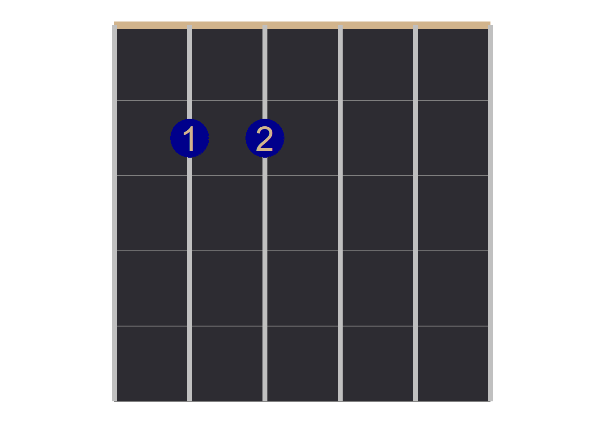
Let us go ahead and label this chord. Note that I want the dots to appear in between the frets (hence the “-0.5” in the \(y\) coordinates).
df_em <- data.frame(x = c(2,3), y = c(2,2) - 0.5, label = c("1", "2"))
chord_em <- fret_background +
geom_point(aes(x = x, y = y),
color = "blue4", data = df_em, size = 12) +
geom_text(aes(x = x, y = y, label = label),
color = "tan", data = df_em, size = 8) +
labs(title = "Em") +
theme(plot.title = element_text(size = 20, face = "bold", hjust = 0.5))
# print
chord_em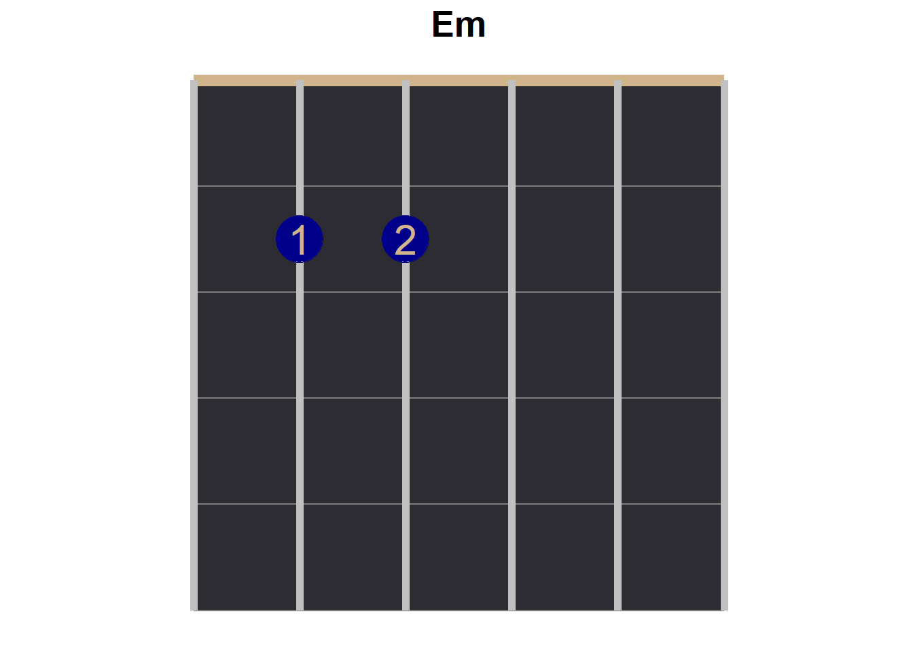
The Other Four Chords
df_g <- data.frame(x = c(2,1,6), y = c(2,3,3) - 0.5, label = c("1", "2", "4"))
chord_g <- fret_background +
geom_point(aes(x = x, y = y),
color = "blue4", data = df_g, size = 12) +
geom_text(aes(x = x, y = y, label = label),
color = "tan", data = df_g, size = 8) +
labs(title = "G") +
theme(plot.title = element_text(size = 20, face = "bold", hjust = 0.5))
# print
chord_g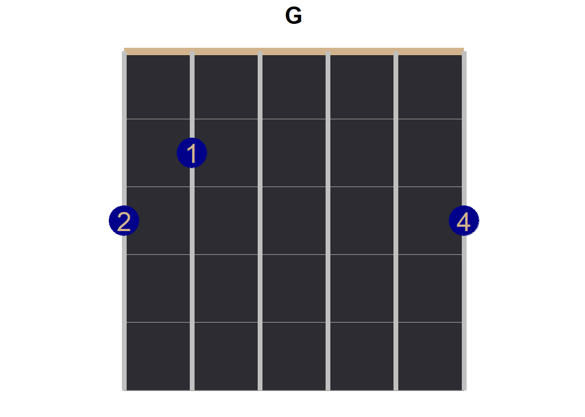
This is something that I worried about. In guitar chord diagrams, there are indicators to tell the player if a string is played open (indicated with an “O”, that is that no fingers are placed on the strings while the string is strung) or if a string is closed (not strung at all, indicated with an “X”), but these indicators are placed above the nut—for our purposes: outside of the graph.
df_d <- data.frame(x = c(4,6,5), y = c(2,2,3) - 0.5, label = c("1", "2", "3"))
chord_d <- fret_background +
geom_point(aes(x = x, y = y),
color = "blue4", data = df_d, size = 12) +
geom_text(aes(x = x, y = y, label = label),
color = "tan", data = df_d, size = 8) +
geom_text(aes(x = 1, y = -0.2, label = "X"), size = 5) +
geom_text(aes(x = 2, y = -0.2, label = "X"), size = 5) +
labs(title = "D") +
theme(plot.title = element_text(size = 20, face = "bold", hjust = 0.5))
# print
chord_d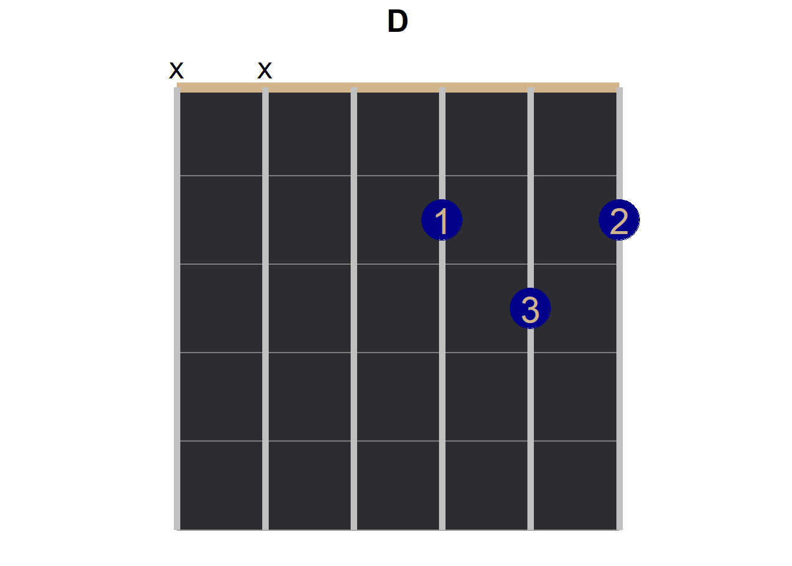
df_a7sus4 <- data.frame(x = c(3,5), y = c(2,3) - 0.5, label = c("1", "2"))
chord_a7sus4 <- fret_background +
geom_point(aes(x = x, y = y),
color = "blue4", data = df_a7sus4, size = 12) +
geom_text(aes(x = x, y = y, label = label),
color = "tan", data = df_a7sus4, size = 8) +
geom_text(aes(x = 1, y = -0.2, label = "X"), size = 5) +
labs(title = "A7sus4") +
theme(plot.title = element_text(size = 20, face = "bold", hjust = 0.5))
# print
chord_a7sus4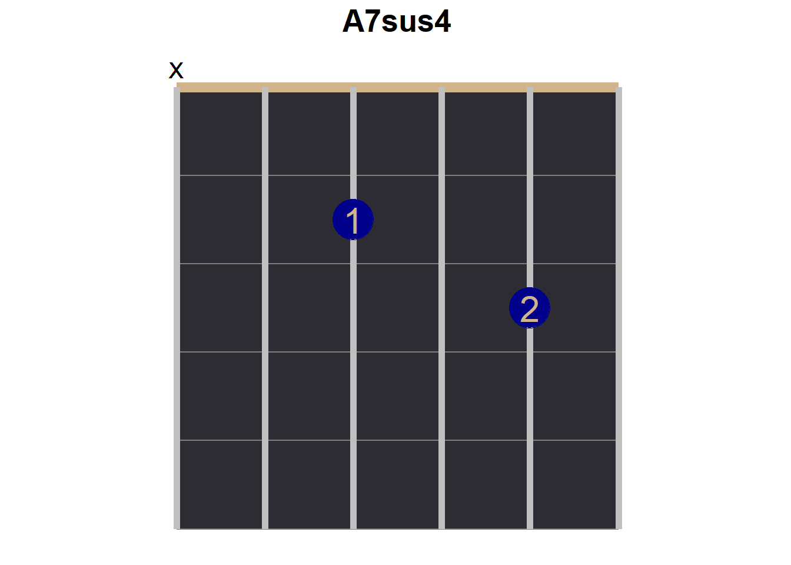
df_c <- data.frame(x = c(5,3,2), y = c(1,2,3) - 0.5, label = c("1", "2", "3"))
chord_c <- fret_background +
geom_point(aes(x = x, y = y),
color = "blue4", data = df_c, size = 12) +
geom_text(aes(x = x, y = y, label = label),
color = "tan", data = df_c, size = 8) +
geom_text(aes(x = 1, y = -0.2, label = "X"), size = 5) +
labs(title = "C") +
theme(plot.title = element_text(size = 20, face = "bold", hjust = 0.5))
# print
chord_c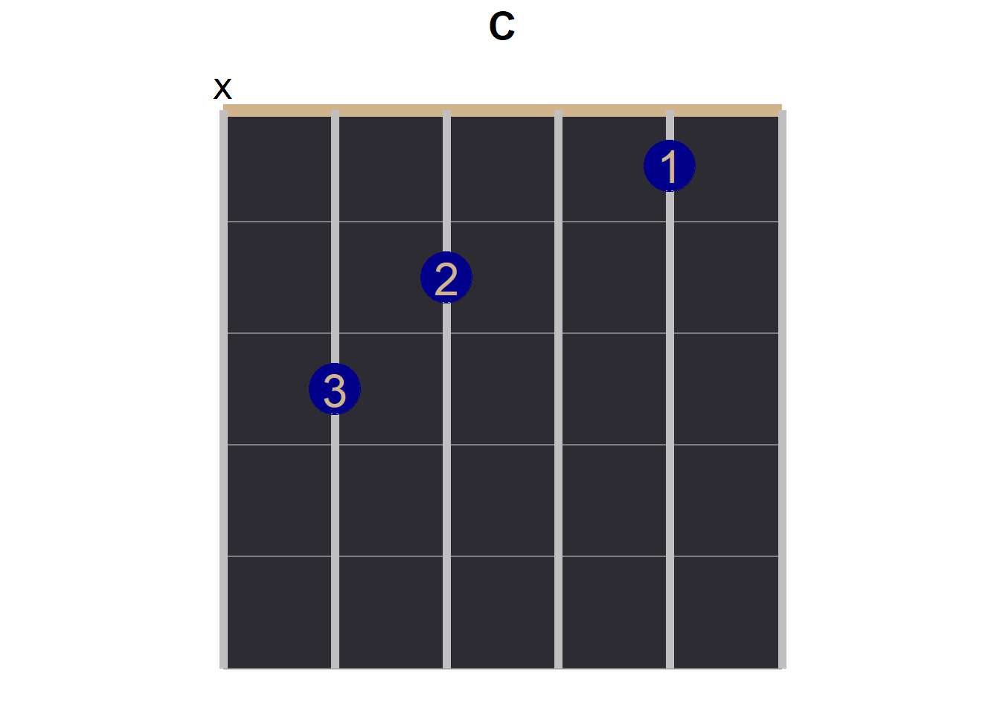
Layout
Now it is time to start to build the infographic! The patchwork package is so useful!
First Draft
With 5 chords, I am imagining a layout of plots with about 2 rows.
(chord_em + chord_g + chord_d) / (chord_a7sus4 + chord_c)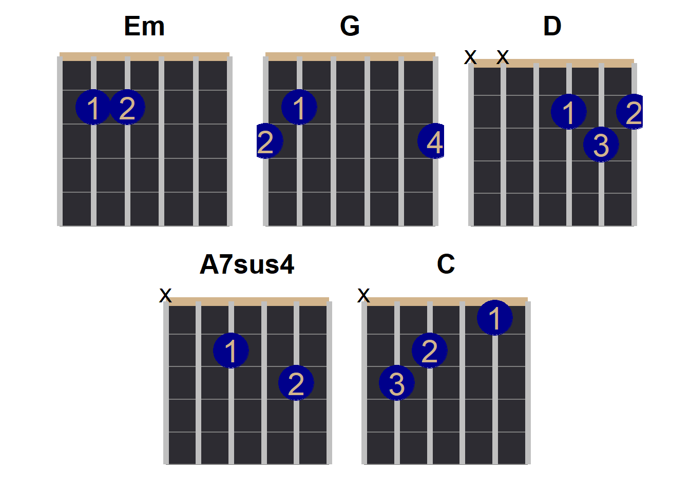
A Caption Tile
Yes, I figured that I would want to squeeze in a “square” of text somewhere to even out the image.
# https://statisticsglobe.com/plot-only-text-in-r
caption_plot <- ggplot() +
annotate("text",
x = 1, y = 1,
size = 5,
label = "Wonderwall by Oasis\n \nsimplified tab\nvia Ultimate Guitar\ncapo: 2nd fret\nkey: F#m") +
coord_equal() +
theme(
axis.title = element_blank(),
axis.ticks = element_blank(),
axis.text = element_blank(),
panel.background = element_rect(fill = "#2D2C32"),
panel.grid.major = element_blank(),
panel.grid.minor = element_blank()
)
# print
caption_plot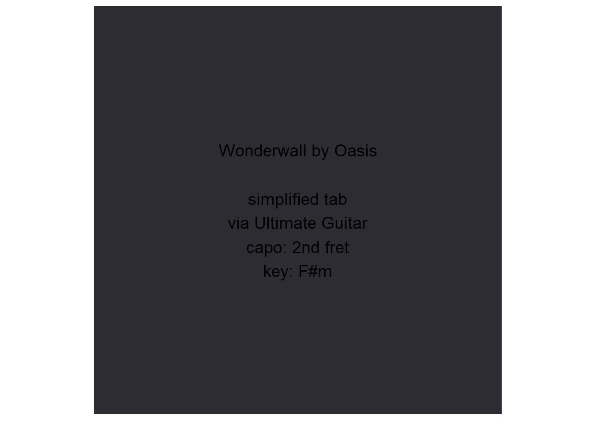
Now to see if this “caption plot” fits in nicely.
(chord_em + chord_g + chord_d) / (chord_a7sus4 + caption_plot +chord_c)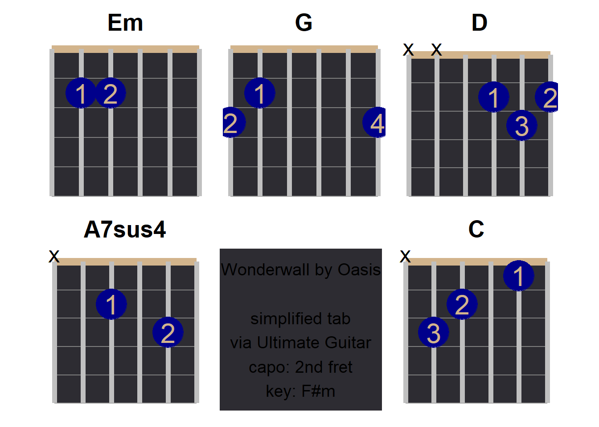
At the time of this writing, it is near midnight, and my motivation for refinement is decreasing rapidly, lol.
main_plot <- (chord_em + chord_g + chord_d) / (chord_a7sus4 + caption_plot +chord_c)Strumming Pattern
I, and I assume other beginners, do not natually pick up a strumming pattern by ear. Fortunately, the tab did include that. But how do I add the pattern to this diagram?
# https://community.rstudio.com/t/up-and-down-arrows-inside-r/76287
# first, I will type into words, and then do a search-and-replace
# down, pause, down, pause, down, pause, down, up, down, up, down, pause, down, pause, down, up, down, up, down, pause, down, pause, down, up, pause, up, pause, up, down, pause, down, pause
strumming_pattern <- intToUtf8(c(8595, 8196, 8595, 8196, 8595, 8196, 8595, 8593, 8595, 8593, 8595, 8196, 8595, 8196, 8595, 8593, 8595, 8593, 8595, 8196, 8595, 8196, 8595, 8593, 8196, 8593, 8196, 8593, 8595, 8196, 8595, 8196))Annotationg and Echoing the Meme
With patchwork, we can furthermore add a title, subtitle, and/or caption to the overall plot.
final_plot <- main_plot +
plot_annotation(title = "Anyway, Here's Wonderwall",
caption = paste("strumming pattern:", strumming_pattern, "\nGraph by @DerekSollberger"),
theme = theme(plot.title = element_text(
size = 25, hjust = 0.5
),
plot.caption = element_text(
size = 20, hjust = 0.5
)))
# print
final_plot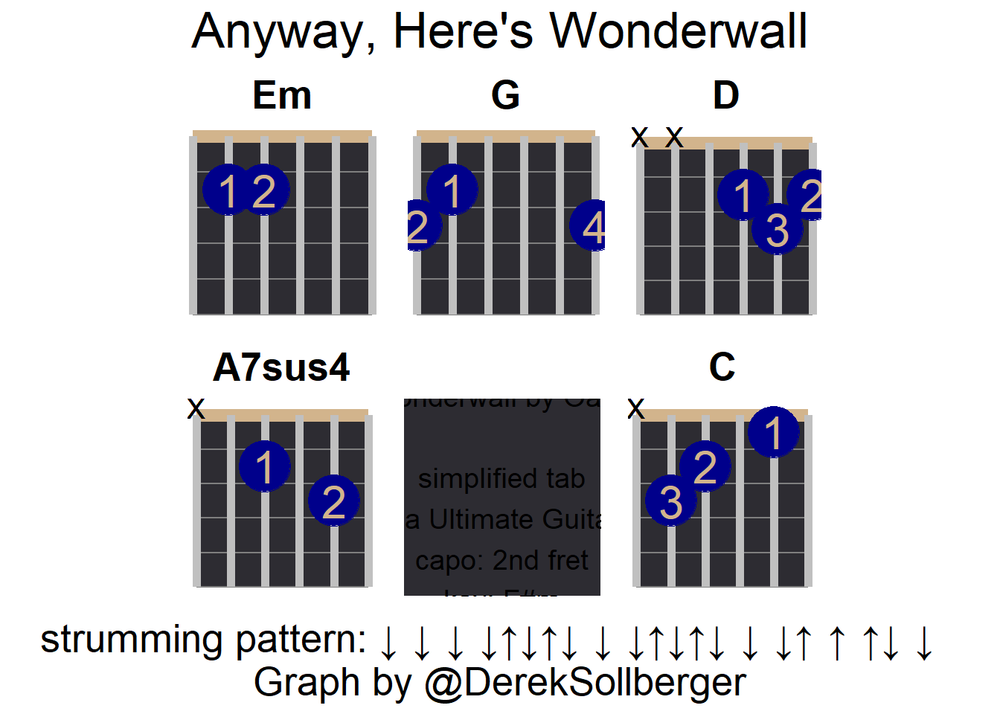
ggsave("wonderwall.png", plot = final_plot, device = "png",
width = 8, height = 6, units = "in")